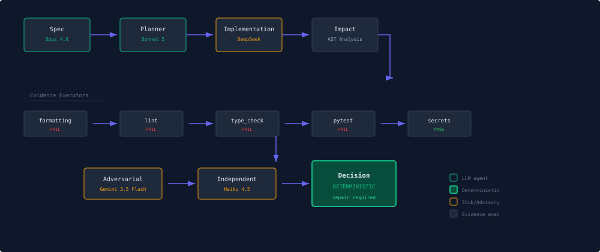

Evidence-First
Harness
Deterministic assurance for AI-generated code. Treats every AI patch as an untrusted proposal — routes outputs through deterministic policy gates that produce evidence bundles.
"No agent-generated change may be accepted unless every material claim introduced by the change is linked to sufficient, reproducible, risk-adjusted evidence."
Repository metrics reflect the current public repository state at the time of publication and may change.
Smoke Test
[ Quick Start ]
git clone https://github.com/rmax-ai/evidence-first-harness.gitcd evidence-first-harness && uv sync --extra devuv run pytest tests/ -quv run efh run --repo . --task "Add a focused test for the policy engine."[ Representative Run ]
$ efh run --repo . --task "Add a focused test for the policy engine."
workflow_started run_id=run_3da28c6662d9
worktree_created base_commit=9007ebb1
specification_agent_call sonnet-5 in=294 out=4096
planner_agent_call opus-4-6 in=430 out=770
implementation_agent_call gpt-5.6-terra in=276 out=34
evidence_executed formatting ruff fail
evidence_executed lint ruff fail
evidence_executed type_check pyright fail
evidence_executed secret_scan secrets pass
evidence_executed tests pytest fail
decision_rendered decision=repair_required
mandatory_failed=4 passed=1 tier=3
│ Agent Model In Out │
├──────────────────┼──────────────────┼──────┼──────┤
│ specification claude-sonnet-5 294 4096 │
│ planner claude-opus-4-6 430 770 │
│ implementation gpt-5.6-terra 276 34 │
├──────────────────┼──────────────────┼──────┼──────┤
│ TOTAL 1000 4900 │The transcript below is a representative smoke-test run from the alpha harness. It shows the intended separation of roles: LLM agents produce implementation and review artifacts, while deterministic checks and policy decide the workflow outcome. Exact runtime, token counts, and cost vary with provider pricing, API behavior, cache state, model routing, and repository state. Treat the displayed cost as a run-specific estimate, not a guaranteed current API price.
Estimated run cost: approximately $0.1277 under current pricing assumptions as of 2026-07-15. This uses Sonnet 5 for specification, Opus 4.6 for planning, and GPT-5.6 Terra for implementation. These estimates exclude hidden/tool overhead and provider-side accounting differences.
Architecture
Illustrative architecture — not a benchmark or production deployment. In the shown configuration, LLM agents produce implementation and review artifacts; deterministic checks and policy decide the workflow outcome.

| # | Component | Type | Controls |
|---|---|---|---|
| [01] | Specification agent | LLM AGENT | Interprets tasks, derives requirements |
| [02] | Planner agent | LLM AGENT | Proposes implementation plan |
| [03] | Implementation agent | LLM AGENT | Proposes a structured patch; harness validates and applies it |
| [04] | Independent test agent | LLM AGENT | Generates additional tests (stubbed in alpha) |
| [05] | Adversarial review agent | LLM AGENT | Identifies unsupported claims (stubbed in alpha) |
| [06] | Explanation agent | LLM AGENT | Converts evidence to report (stubbed in alpha) |
| [07] | Policy engine | DETERMINISTIC | Required evidence, thresholds, approval roles |
| [08] | Decision engine | DETERMINISTIC | Accept / reject / repair decision |
| [09] | Sandbox manager | DETERMINISTIC | Isolation, permissions, timeouts |
| [10] | Evidence executors | DETERMINISTIC | Run checks, record EvidenceRecords |
| [11] | AST analyzer | DETERMINISTIC | Impact analysis, test selection |
| [12] | Provenance recorder | DETERMINISTIC | Hash-chained event stream |
Model Routing & Pricing
[ Agent Routing ]
| Agent | Model | Provider | Live | In | Out |
|---|---|---|---|---|---|
| Specification | claude-sonnet-5 | Anthropic | 294 | 4096 | |
| Planner | claude-opus-4-6 | Anthropic | 430 | 770 | |
| Implementation | gpt-5.6-terra | OpenAI | 276 | 34 | |
| Independent Test | claude-haiku-4-5 | Anthropic | 0 | 0 | |
| Adversarial Review | gemini-3.5-flash | 0 | 0 | ||
| Explanation | gemini-3.5-flash | 0 | 0 |
Implementation proposals use strict JSON Schema Structured Outputs; the harness validates and applies the returned unified diff.
[ Pricing — USD per 1M tokens, as of 2026-07-14 ]
| Model | Input $ | Output $ |
|---|---|---|
| claude-opus-4-6 | $15.00 | $75.00 |
| claude-sonnet-5 | $3.00 | $15.00 |
| claude-haiku-4-5 | $0.80 | $4.00 |
| gpt-5.6-terra | $2.50 | $15.00 |
| Balanced GPT-5.6 model. Structured Outputs enabled for implementation proposals. | ||
| gemini-3.5-flash | $1.50 | $9.00 |
| Standard tier visible pricing. Actual cost may differ by tier/region. | ||
The harness routes implementation and evaluation through distinct roles. In this alpha, 3 of 6 agent roles are live LLM agents and the remaining evaluator roles are stubbed or deterministic placeholders.
Evidence Tiers
formatting, lint, type check, targeted tests, secret scan
+ integration tests, security scan, mutation testing
+ contract tests, dependency scan, performance, rollback